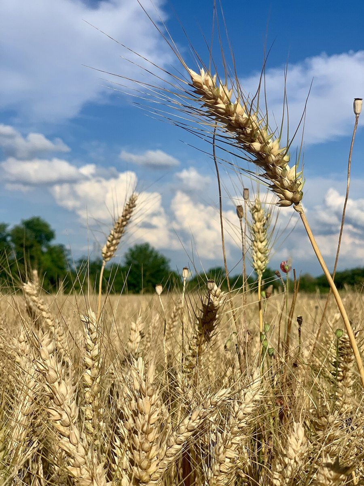
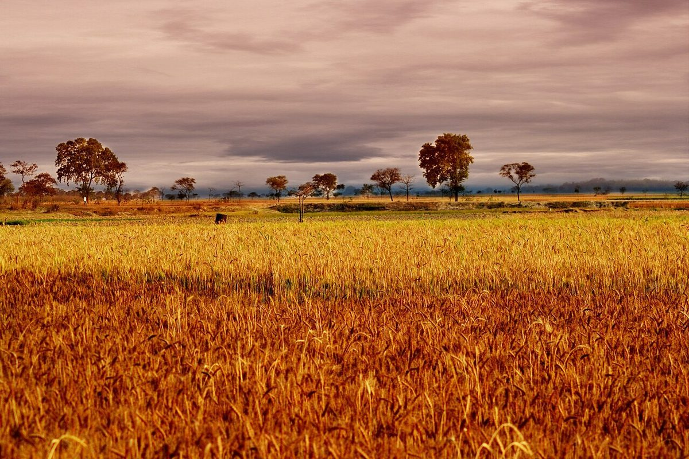

LAYER 04 / 下段
店のこと
確認できているのは、所在地・電話番号・Instagramのアカウントです。
「想像してみる」部分は制作側の想像です。お店の実際の様子・考え・商品とは関係がありません。
確認できていること
- 店名は「ジャーニーブレッド」、業種はパン屋
- 所在地は富山県中新川郡上市町放士ケ瀬新７６−４５(〒930-0379)
- 電話番号は090-2833-8898
- Instagramは @journey_bread_8
- 営業時間・定休日・メニュー・価格・ご予約・駐車場は準備中

IMAGINE
「ジャーニーブレッド」という名前から
由来は分かりません。制作側は、旅の荷物にパンを一つ入れるような場面を想像しました。リュックの一番上に、すぐ取り出せるように。ただの連想で、お店の考えや実際の商品とは関係ありません。

